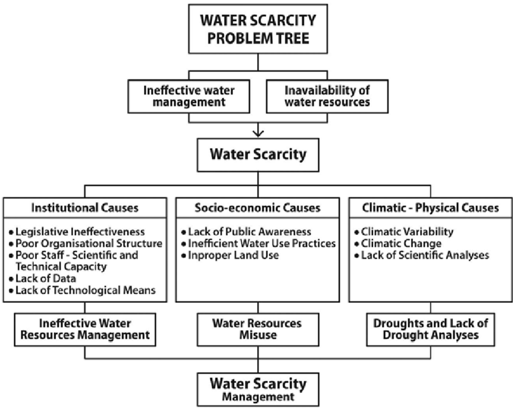

Introduction



What Causes Water Scarcity?
Water scarcity; in more simpler terms is when there is not enough water for everyone and water stress has increased. However, the question that you're pondering about may be what caused this issue worldwide and why is no one taking action? This question has multiple answers because there are numerous reasons on why water scarcity has increased, but these are the answers that pop up as the most major causes:
1) Climate change
2) Natural calamities
3) Increased Human Consumption
4) Over usage and wastage of water
5) A global rise in freshwater demand due to rise in population
6) Overuse of aquifers and its consequent slow recharge